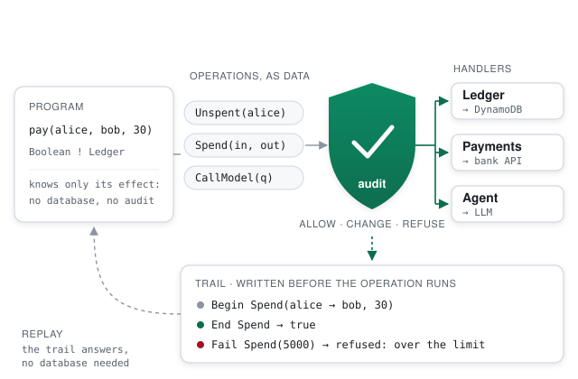

okay-effects is a family of algebraic-effect systems. A program's type says what it may do. A handler decides how it is done. An interceptor puts each of those actions through a point of control. A sensitive effect, such as a payment, cannot run anywhere but under its audit. The compiler checks this. It is not a convention.

Effects make every action of a program an explicit operation that a handler interprets. That gives one place where each action can be checked. okay uses that place at three points: in the types, at run time, and in the compiled code.
Receipt ! Db + Payments is a program that may reach a database and payments, and nothing else. A program that performs a sensitive operation outside its audit does not compile.
Each operation passes a point that can record it, change it (normalise, cap, mask), or refuse it. An observer can see every operation of every effect. All of these live in the kernel.
okay-audit reads the compiled classes. It confirms that business code reaches no network, files, SQL, clock or threads on its own, and it lists every module that does, by provider: the dependency inventory DORA asks for.
A payment audit from okay-core's test suite, shortened:
enum Pay[X]: case Transfer(to: String, amount: Int) extends Pay[String] given Sensitive[Pay] = Sensitive() // from here on, Pay runs only under an audit def guarded[T, A](limit: Int) = new Interceptor[Pay, T, A, A]: def apply[X](op: Pay[X], k: X => A ! T, pass: Pass[Pay, T]) = op match case Pay.Transfer(to, amount) if amount > limit => record(s"refused: $amount to ${masked(to)} over the limit $limit") *> raise("over the limit") case Pay.Transfer(to, amount) => pass(Pay.Transfer(to.trim.toUpperCase, amount)).flatMap: receipt => // changed, then passed on record(s"transfer $amount to ${masked(to)} → $receipt") *> k(receipt) audit(guarded(1000))(payments).handleAudited(bank).handle(trail).run // transfer 100 to ****1234 → ok:ACCT-1234:100 // refused: 5000 to ****T-77 over the limit 1000
The same programs exist in Rust (okay-rust) and TypeScript (okay-ts), so the guarantee does not depend on Scala. Full account: okay-core, docs/intercept.md.
An effect is an interface of operations. A handler implements it. The program is written once, and the caller picks the meaning.
The same code runs against a real database, an in-memory one for tests, or a recording one for replay. Nothing in the program changes, only the handler.
A program lists every effect it uses. There is no stack of monad transformers to order up front and no lift. The order of the handlers is chosen when the program is run.
A handler gets the operation and the rest of the program. It can stop the program like an exception, resume it once with an answer, or resume it many times to search.
okay-simple is the smallest way in: one typed interface of algebraic effects for Scala 3 (3.3 LTS on) and Scala 2.13, on the JVM, Scala.js and Scala Native. It is released as 0.1.0, and adding it is two lines in sbt.
resolvers += "okay-effects" at "https://okay-effects.github.io/okay-simple/maven" libraryDependencies ++= Seq( "io.github.okay-effects" %% "okay-effects" % "0.1.0", // the interface and the standard effects "io.github.okay-effects" %% "okay-effects-machine" % "0.1.0" // an implementation to run on )
Use %%% for Scala.js and Scala Native. Other modules use the same form: okay-effects-stream, -async, -zio, -cats and the rest. The full list is in the repository index.
import okay.effects.*
import okay.effects.std.*
type Counting[X] = (Reader % Int + State % Int)[X]
def step: Int ! Counting =
for
inc <- ask[Int, Counting]
n <- get[Int, Counting]
_ <- put[Int, Counting](n + inc)
yield n + inc
@main def hello(): Unit =
println(run(state(10)(reader(5)(step)))) // (15,15): the state, and the value
The program's type names its effects, a reader and a state. reader(5) and state(10) are their handlers, and they can be applied in either order. Nothing runs until run.
The step-by-step page goes on from here: your own effect and its handler, a handler that resumes twice, errors and streams.
The same program on two implementations, in Scala 3 and in Scala 2, and the Scala versions each form needs.
Your own effect, a handler that resumes twice, choice, errors, generators, interception and delimited control.
Interop with ZIO (environment, errors, layers), cats-effect, fs2, kyo and monix. Bring effects into an existing codebase one part at a time.
There is one kernel. A program is data and the rest of the program is a value. The other languages port the kernel, are checked by its test suites, or bridge to it. okay-kernel is a protocol between them: a program in one language runs under handlers written in another, in one process or over a wire. In the demo, a shop runs in Go while its inventory, payments and mail are Scala handlers.
| Project | Language | What it is |
|---|---|---|
| okay-core | Scala 3 | The kernel: one monad, delimited control (shift0), multi-shot continuations as data, no macros, no casts. Interceptors and audit. |
| okay-simple | Scala 3, 2.13 | A small typed interface for both Scala compilers, released as 0.1.0: three implementations, ten modules, and interop with cats, ZIO, fs2, kyo and monix. |
| okay-kernel | Java API | The protocol: a program steps to done, yield, failed or cancelled. It comes with a TCK that every implementation passes. |
| okay-java | Java 25 | The kernel's design on shift0. A capability that escapes its handler is a compile error. |
| okay-rust | Rust | The kernel ported to Rust, plus a separate crate for effects in plain async Rust with capabilities. It is checked against the kernel's suites. |
| okay-go | Go | Direct-style effects on Go's coroutines, at 49 ns an operation. Parallel branches run on goroutines. |
| okay-python | Python | Typed effects on generators, clean under mypy --strict. asyncio needs no coloured functions. |
| okay-ts | TypeScript | Effects tracked in the type as a union. Programs as data resume many times; generators resume once. |
The whole family, with an example in each language: docs/family.md.
okay is over a hundred modules on one model of effects. The core has no dependencies, and one source builds for the JVM, Scala.js and Scala Native.
For AI agents in particular, the agent's every action is an effect, so the controls above apply to it.
The numbers are from okay's benchmarks. Each has its protocol written down, and a competitor is measured on the same shape. Lower is better. A loss is printed as a loss.
| Benchmark | okay | kyo | cats IO | ZIO | fs2 |
|---|---|---|---|---|---|
10 000 flatMaps, µs | 5.5 | 60 | 163 | 193 | — |
| Stream pipeline, same chunking, µs | 8.2 | 65.9 | — | 35.8 | 21.9 |
| Fork/join of 100 fibers, µs | 24 | 18.5 | 121 | 46.6 | — |
On a real streaming job across 1, 2, 4 and 8 cores, okay scales 5.3×. zio-streams, fs2, kyo and java.util.stream level off at about 1.6–1.7×. Sources: docs/benchmarks.md, the streaming write-up.
Definitions, references, callers, implementations, and which given each call site resolves. It reads them from the compiler's own output (SemanticDB, TASTy, SCIP) and serves them over MCP, so an agent asks instead of grepping. It is built on okay's MCP server.
Every build gets a report that an auditor can read. It shows which modules may reach the outside world, and that business code does not. It has zero dependencies and is evidence, not a compliance claim.